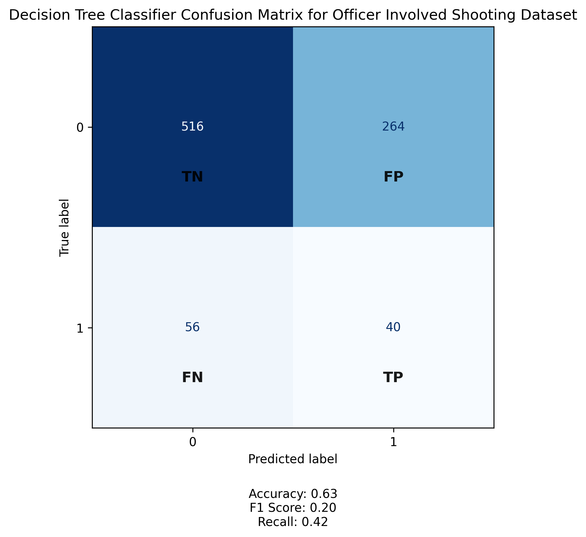
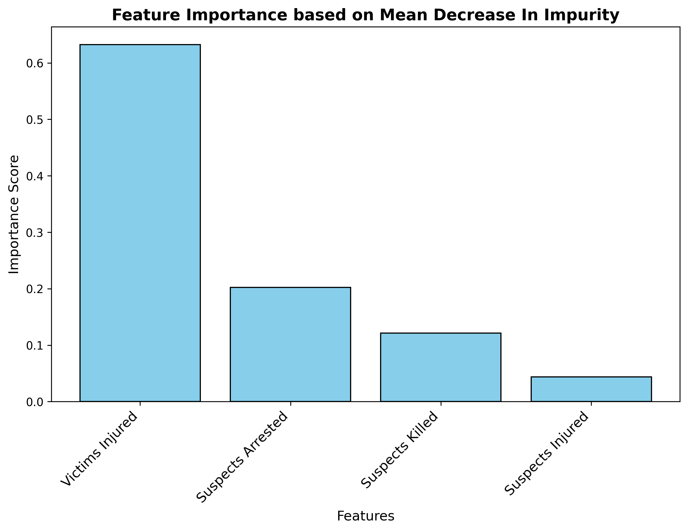
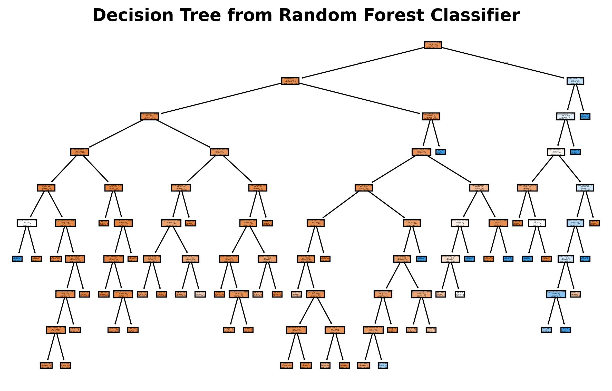
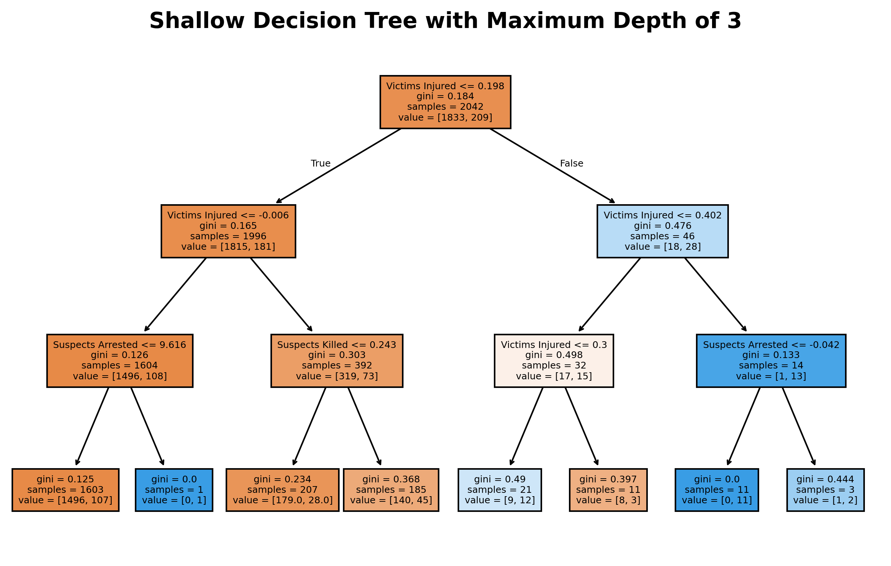
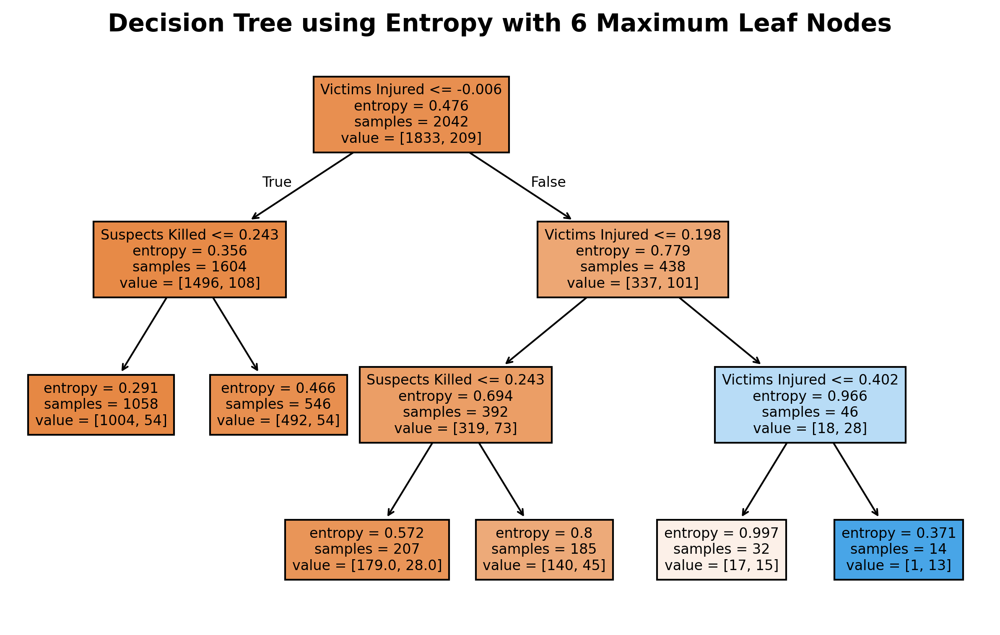
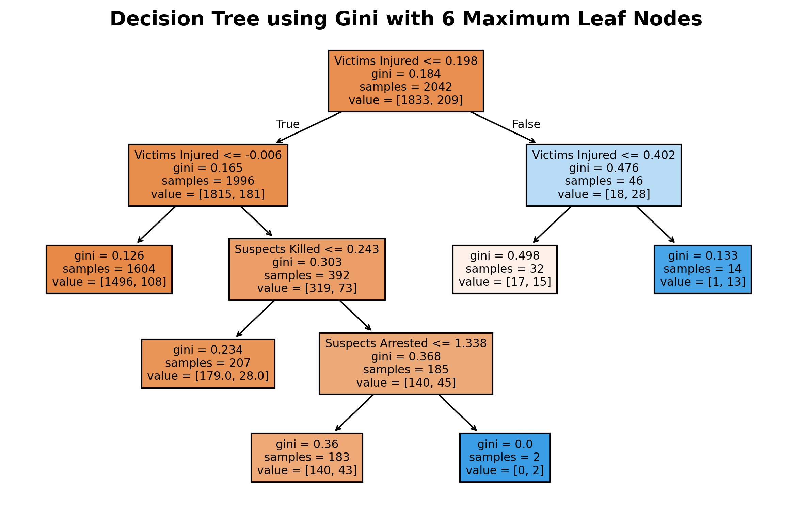

Officer Involved Shootings

Training Data

Testing Data

Confusion Matrix
Feature Importance
Decision Tree using Random Forest
Shallow Decision Tree
Decision Tree using Entropy
Decision Tree using Gini
Conclusions
From these decision tree visualizations, we can see that “Victims Injured” is the most important predictor for determining whether an incident involves fatalities or not. Both the Gini and Entropy models split first on this feature, showing that the number of victims injured is strongly associated with the overall severity of the shooting event. The trees also suggest that incidents with fewer injuries tend to have fewer deaths, while higher injury counts correlate with a higher likelihood of fatalities. Secondary predictors like “Suspects Killed” and “Suspects Arrested” further refine the classification, indicating that outcomes involving suspects' fates may also relate to the event's overall lethality. The similarity between the Gini and Entropy trees indicates stable relationships in the data, while the shallow tree (limited depth of 3) highlights only the most dominant patterns without overfitting. Overall, this analysis suggests that by tracking variables like injuries and suspect outcomes, we can predict the relative severity of future shooting incidents and identify which features most strongly contribute to fatal outcomes.